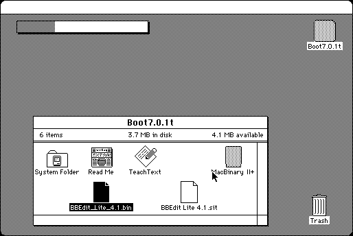

Download
macbinaryii-102.zip (20K) MacBinary II+ 1.0.2 repackaged into a zipped hfs disk image and checksum file. The disk image can be mounted with Mini vMac.
macbinaryii-102.sit (20K) MacBinary II+ 1.0.2 in the original format.
copyright: Peter N. Lewis
mod date: Apr 5, 1993
license: freeware
from url :
Stairways Files
Encodes and Decodes MacBinary files. For System 7. Source code is available (below).

Download Source
macbinaryiiplus-10-src.zip (29K) MacBinary II+ source repackaged into a zipped hfs disk image and checksum file. The disk image can be mounted with Mini vMac.
macbinaryiiplus-10-source.sit (29K) MacBinary II+ source in the original format.
If you find these downloads useful, please consider helping the Gryphel Project, which hosts them.
Here are the md5 checksums for the downloads, signed with Gryphel Key 5:
--------- GRY SIGNED TEXT --------- 85a685eb05fefb509b01c3a257381104 macbinaryii-102.zip ce224c6517a4f9c71558c18ce8c9ce99 macbinaryii-102.sit 1e3e8103fbeac3c2ebce1183c3a6b435 macbinaryiiplus-10-src.zip 79e254448870494abf1afe02e8951ecc macbinaryiiplus-10-source.sit ------- BEGIN GRY SIGNATURE ------- Gry/4Xa8CFcUzxdN/JueVaIsbMnEo53PHIGKkcWNQt6vCVqN2YXAfUiERnnMa7vu 0mhR0bSxf9zViMUW/dqsfaLhAuIO33jbOA6nZWHNxUhKoXcCuO4gvJASEKWVYwxf 7Oqn4bH/rC6evHT+vSddUXKx6NKWyqvDetQtXLDAv4oQHDYAfEoki1kF6ZmQmldz -------- END GRY SIGNATURE --------